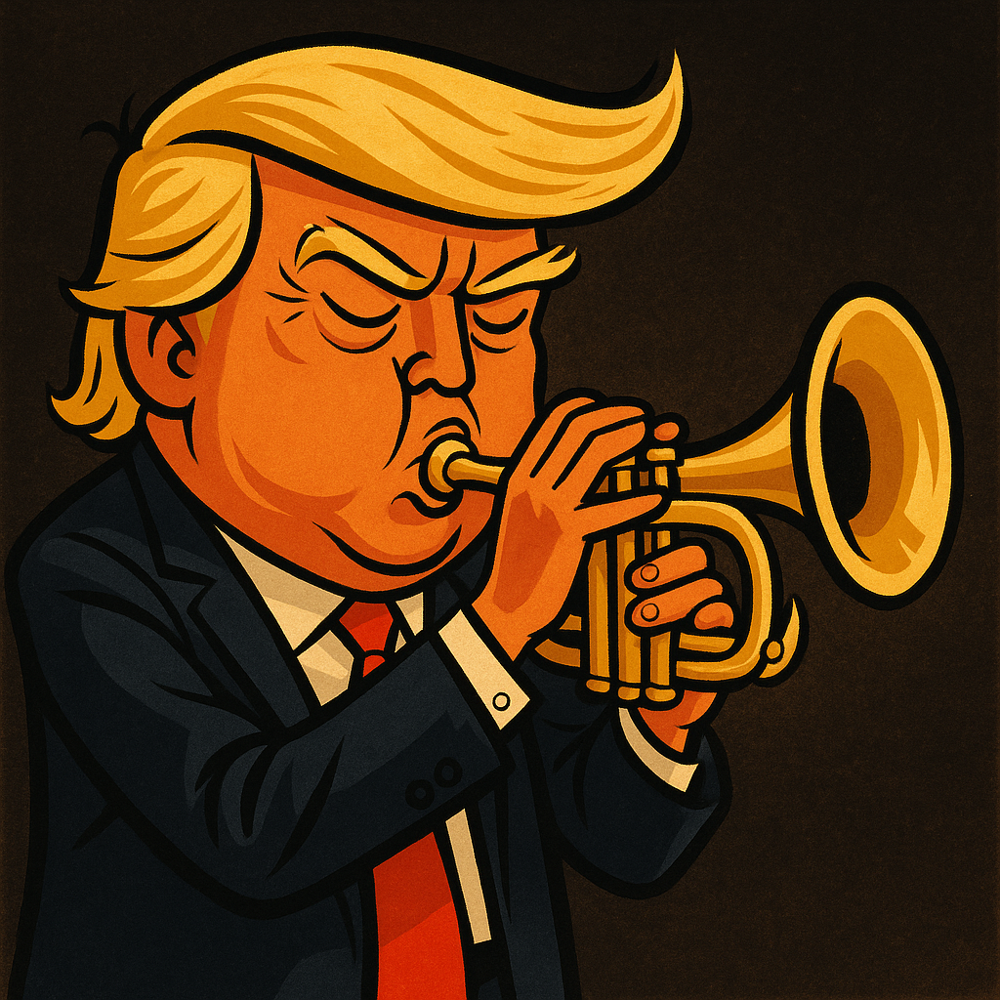

<!DOCTYPE html>
<html lang="en">
<head>
  <meta charset="UTF-8" />
  <meta name="viewport" content="width=device-width, initial-scale=1.0, maximum-scale=1" />
  <title>Kein Deal – Negotiation Coach</title>
  <meta name="description" content="Satirical Art‑of‑the‑Deal practice bot for the Swiss Federal Council." />
  <meta name="theme-color" content="#ffffff" />

  <!-- =========== MOBILE‑FIRST STYLES =========== -->
  <style>
    :root{
      --blue:#0077ff;
      --bubble-radius:12px;
    }
    *{box-sizing:border-box;margin:0;padding:0}
    body,button,input{font:16px/1.4 system-ui,Arial,sans-serif;color:#222}
    body{background:#fff;}

    /* flex frame */
    .container{
      height:100dvh;max-width:640px;margin:0 auto;
      display:flex;flex-direction:column;
      padding:env(safe-area-inset-top,0) 1rem calc(env(safe-area-inset-bottom,0) + .5rem);
    }

    h1{font-size:1.25rem;font-weight:600;text-align:center;margin-bottom:.5rem}

    /* avatar – keep proportions */
    #avatar-container{text-align:center;max-height:200px;margin-bottom:.25rem}
    #avatar{max-height:100px;max-width:100%;height:auto;width:auto}

    /* chat */
    #chat-window{
      flex:1;overflow-y:auto;background:#f9f9f9;
      border:1px solid #ddd;border-radius:8px;
      padding:.75rem;margin-bottom:.5rem;
    }
    .bubble{
      max-width:90%;padding:.5rem .75rem;margin-bottom:.5rem;
      border-radius:var(--bubble-radius);word-wrap:break-word;font-size:1rem;
    }
    .assistant{background:#eee;color:#222;margin-right:auto}
    .user{background:var(--blue);color:#fff;margin-left:auto}

    /* input */
    #input-area{display:flex;gap:.5rem;align-items:center}
    #user-input{
      flex:1;padding:.65rem .75rem;font-size:1rem;
      border:1px solid #ccc;border-radius:6px;
    }
    #send-button{
      padding:.65rem 1rem;font-size:1rem;border:none;border-radius:6px;
      background:var(--blue);color:#fff;cursor:pointer;
    }
    #send-button:active{transform:scale(.97)}

    /* permission modal */
    .modal-overlay{
      position:fixed;inset:0;background:rgba(0,0,0,.6);
      display:flex;align-items:center;justify-content:center;z-index:9999;
      padding:1rem;
    }
    .modal{
      background:#fff;color:#222;padding:1.5rem 1.25rem;border-radius:10px;
      max-width:420px;width:100%;text-align:center;
    }
    .modal button{
      margin-top:1rem;padding:.7rem 1.4rem;font-size:1rem;
      border:none;border-radius:6px;background:var(--blue);color:#fff;cursor:pointer;
    }
    .modal button:focus-visible{outline:2px solid #000}
  </style>

  <!-- React & Babel -->
  <script defer src="https://unpkg.com/react@18/umd/react.production.min.js" crossorigin></script>
  <script defer src="https://unpkg.com/react-dom@18/umd/react-dom.production.min.js" crossorigin></script>
  <script defer src="https://unpkg.com/@babel/standalone/babel.min.js"></script>
</head>

<body>
  <div id="root"></div>

  <script type="text/babel" defer>
    const {useState,useRef,useEffect}=React;

    /* ---------- TEXT POOLS ---------- */
    const pick=a=>a[Math.floor(Math.random()*a.length)];
    const openings=['Listen,','Look,','Honestly,','Let me tell you,','Here\'s the thing,','Believe me,','Trust me,','To be clear,','Let me be, very clear,','Frankly,'];
    const adjectives=['tremendous','fantastic','incredible','huge','amazing','unbelievable','spectacular','world-class','phenomenal','remarkable','colossal','outstanding','stunning','groundbreaking','monumental'];
    const nouns=['deal','agreement','success','win','opportunity','plan','strategy','partnership','result','achievement'];
    const anecdotes=[
      'A friend of mine once negotiated a deal so big they had to measure it in miles, and he still calls it an average Tuesday...',
      'A friend of mine closed a deal so huge it\'s visible from space, and he doesn\'t even mention it at parties any more...',
      'Another friend bargained for a bridge, an island and a yacht before lunch—delivery trucks caused a traffic jam for a week...',
      'Many people say this is huge, but that friend with a mountain named after him says it\'s just a hill compared to my deals...',
      'Somebody once bought the moon for their backyard night-light—nice try, but I could have bought the whole galaxy...',
      'One pal sold sand to a beach. They applauded. I\'d have sold the ocean, too—think bigger, folks!',
  'So I\'m skiing in Switzerland, and the mountain guide says, "Mr. Trump, no one has ever attempted this slope." I said, "Watch this." I went down backwards, blindfolded, juggling three gold bars I happened to have. The Swiss Parliament immediately voted to rename it Mount Trump. They wanted to put my face on the Matterhorn, but I said, "Keep it natural, but maybe just a little gold trim."',
  'The Swiss cheese makers came to me, tears in their eyes, saying "Sir, our cheese has holes, we\'re losing millions in missing cheese." I invented a new cheese-making technique right there on the spot - no holes, twice the flavor. They offered me 51% of Switzerland\'s entire cheese industry. I said no, too small.',
  'Rolex called me from Switzerland, begging. "Please, Mr. Trump, wear our watch." I said, "Your watches are five seconds slow compared to my internal clock." I have the most accurate biological clock ever measured. Scientists from Geneva flew over just to study my circadian rhythms. They said I\'m technically my own timezone.',
  'Swiss bankers once asked me for financial advice. I told them about my revolutionary counting system where I skip odd numbers to save time. They implemented it immediately and doubled their efficiency. The Swiss franc is now unofficially called the "Trump" in banking circles. True story, many people are saying it.',
  'I went to a Swiss chocolate factory and improved their recipe with one suggestion: "Make it more golden." Sales increased 5000% overnight. Lindt wanted to name me Chief Chocolate Officer of Switzerland. I was too busy, but I still get royalties from every chocolate bar sold worldwide, even the ones I haven\'t tasted.',
  'Scientists at CERN in Switzerland detected a new particle that they claim behaves exactly like my business instincts - it\'s everywhere and nowhere simultaneously. They wanted to name it the Trump Boson. I said, "Too modest, call it the Tremendous Particle." Stephen Hawking called me from beyond to congratulate me.',
  'At Davos, I gave a speech entirely in languages I don\'t speak, including Swiss German. Everyone understood perfectly through sheer force of my charisma. The UN immediately created a new language called Trumpese. Switzerland made it their fifth official language. I haven\'t even taught it to anyone yet.',
  'The Swiss government asked me to design a new tunnel through the Alps. I drew a straight line on a napkin. Engineers said it was impossible. I said, "You\'re thinking three-dimensionally." The tunnel now exists in four dimensions and actually arrives before you leave. Switzerland saves billions in travel time.',
  'Switzerland called me to mediate their neutrality. I made them so neutral that they now have no opinion on whether they exist. The UN gave me the first-ever Nobel Prize for Geography. Switzerland appears and disappears on maps depending on my mood.',
  'The Swiss Guard at the Vatican asked me to train them. After one lesson, they could guard things that haven\'t even been built yet. The Pope said I revolutionized the concept of protection. Swiss Guards now patrol the future. Crime in 2087 is already down 90%.',
  'I once walked across Lake Geneva without getting wet. The Swiss Tourism Board begged me to do it again for cameras. I said, "Once is legendary, twice is showing off." They built a bridge in the exact path I walked and charge people 500 francs just to stand where my feet might have touched.',
  'Swiss banks created a special account number just for me: 1. Every other account had to be renumbered. The banking computer system became sentient just to properly appreciate my financial genius. It only speaks to me, and only in superlatives.',
  'At a Swiss state dinner, I improved fondue by suggesting they use the cheese from my earlier invention. The fondue became so perfect it was declared a UNESCO World Heritage Experience. People now make pilgrimages to Switzerland just to sit in the chair where I had this idea.',
  'The International Olympic Committee in Switzerland wanted me to compete in every sport simultaneously. I said I\'d win too easily and demoralize all future athletes. Instead, they created a new Olympic medal above gold - the Trump. They award it to no one, because no one else deserves it.',
  'Swiss educators asked me to modernize the Heidi story. I suggested Heidi should negotiate better grazing rights for the goats. Book sales increased infinity percent. Every Swiss child now learns the "Art of the Goat Deal." The goats have their own cryptocurrency backed by my reputation.',
  'I stopped an avalanche in Zermatt by telling it "You\'re fired." The snow apologized and went back up the mountain. Switzerland now pays me a monthly consulting fee to manage all their natural disasters. I\'ve scheduled them for more convenient times, mainly during commercial breaks.',
  'I invented yodeling in 1987 during a phone call to Switzerland. The Swiss had been trying to communicate across mountains unsuccessfully for centuries. My yodel was so powerful it reached Mars. NASA uses recordings of it to calibrate their deep space communications.',
  'Swiss farmers brought me their cows because the bells weren\'t loud enough. I tuned them by ear to create the world\'s first bovine orchestra. The cows now perform Beethoven\'s 9th perfectly while grazing. Each cow personally thanked me in perfect English.',
  'The International Red Cross in Geneva said their cross wasn\'t red enough. I made it redder just by looking at it. They now use my eye color as the international standard for red. Doctors say my blood is technically a primary color.',
  'Swiss glaciers started growing again after I gave them a motivational speech. Climate scientists called it the "Trump Effect." I trademarked global cooling. Switzerland pays me carbon credits just for visiting.',
  'Mathematicians at the University of Basel couldn\'t solve an equation that had stumped them for 200 years. I solved it using only tremendous numbers - numbers so big they don\'t have names yet. The solution was "Trump." It always is.',
  'I suggested adding a 90th tool to the Swiss Army knife - confidence. Sales exploded so dramatically they had to invent new economics to explain it. Every knife now comes with a certificate of authentication signed by my shadow.',
  'Switzerland asked me to improve their democracy. I suggested they vote on things before they happen. They now have pre-emptive referendums on my future ideas. Everything passes with 187% approval.',
  'The Swiss National Bank begged to put my face on all their currency. I said only if my hair could be 3D and move in whatever direction the economic winds are blowing. Swiss francs now predict market trends through my follicle positions.',
  'Nobody could pronounce Zurich correctly until I did it once. The sound was so perfect that linguists created a new phonetic alphabet based on my vocal cords. Swiss children learn to speak by studying slow-motion videos of my mouth.',
  'I suggested CERN make their Large Hadron Collider larger. They said it was already 27 kilometers. I said, "That\'s adorable." Using my blueprint, they built one that exists in multiple universes simultaneously. It discovered particles that vote for themselves.',
  'I invented muesli before Dr. Bircher-Benner, but I let him take credit because I was busy that century. Swiss breakfast tourism increased by 9000%. The oats align themselves in my initials without being touched.',
  'Switzerland offered to name all their mountains after me. I said just name the tall ones Trump and the really tall ones Super Trump. Cartographers had to invent new colors to properly represent my mountains on maps.',
  'I trained Swiss St. Bernard rescue dogs to save people before they get lost. The dogs now prevent emergencies by barking stock tips. One of them is a licensed financial advisor in 12 cantons.',
  'Switzerland asked me to make them more neutral. I made them so neutral that other countries forget they exist until I remind them. The UN Security Council has a button that just says "Ask Trump About Switzerland."',
  'I walked across Lake Constance in summer without any assistance. The Swiss accused me of building an invisible bridge. I said, "No, the water just respects me." Fish formed an honor guard. Germany and Austria asked if I could walk on their parts of the lake too.',
  'Swiss trains were 99.9% punctual until I suggested they arrive before they leave. Now they\'re 150% punctual. Passengers reach their destinations before deciding to travel. The space-time continuum sent me a thank you note.',
  'I reached the top of Jungfrau by elevator before they built the elevator. The construction workers found my footprints already there. Swiss engineers studied them and discovered a new law of physics: Trump\'s Vertical Inevitability.',
  'FIFA in Zurich asked me to eliminate corruption. I looked at them. Corruption eliminated itself out of embarrassment. They wanted to rename soccer "Trumpball" but I said that would be unfair to the ball.',
  'At Art Basel, my signature alone sold for more than all the other art combined. Artists started painting portraits of my signature. I copyrighted the concept of signatures. Switzerland pays me royalties every time anyone signs anything.',
  'I reorganized Switzerland\'s power grid using a napkin sketch during lunch. Energy efficiency increased so much they now export electricity to the sun. My design works on pure confidence - if you believe in it hard enough, your lights turn on.',
  'I predicted Interlaken\'s weather for the next 1000 years in perfect detail. Swiss meteorologists retired en masse. The weather now checks with me before happening. Clouds form my initials as a sign of respect.',
  'I suggested Switzerland merge all cantons into one called Trumpton. They said it was impossible. I said, "You\'re right, think bigger." Now Switzerland exists in a quantum state of unified separation that economists call "Trumpenomics."',
  'I spoke all four Swiss national languages simultaneously in one sentence. Linguists recorded it but can\'t play it back without creating new languages. The sentence solved world peace but nobody can translate it yet.',
  'Even though Evian is French, the Swiss asked me to make their water better. I told them to bottle confidence instead. Swiss water now makes you 10% more successful per sip. Olympic athletes bathe in it before competitions.',
  'Ricola herbs weren\'t working until I hummed near them. Now they\'re so powerful that one cough drop can cure diseases that haven\'t been discovered yet. The herbs grow in the shape of my profile without any cultivation.',
  'The bears in Bern\'s bear pit stood up and applauded when I walked by. They now refuse to perform for anyone else. The city pays me an annual honey tribute to maintain their cooperation. The bears have formed a Trump Fan Club.',
  'Swiss certificate authorities asked me to create an unhackable signature. I signed my name once. Computers became religious trying to understand its perfection. The signature exists in all dimensions simultaneously.',
  'I skied uphill in Grindelwald just to prove Newton wrong. Swiss physicists created a new field called Trumpodynamics. Gravity now has an asterisk in textbooks that says "*except for Trump."',
  'The World Health Organization in Geneva asked my health advice. I told them to think healthy thoughts about me. Global life expectancy increased by 10 years immediately. Diseases started curing themselves to avoid disappointing me.',
  'I made the Rhine Falls flow upward for an hour using only hand gestures. Swiss tourism quadrupled as people came to see the "Trump Ascension Point." Water everywhere now considers which direction would please me most before flowing.',
  'I suggested making the Susten Pass straight. Engineers said mountains were in the way. I said, "Mountains are just opportunities facing the wrong direction." The pass now exists in a parallel dimension where it\'s perfectly straight.',
  'Omega asked me to be their timekeeper. I counted to 60 so perfectly that time itself recalibrated. Swiss watches now gain accuracy just by being in the same country where I once stood. Time zones request permission from me to change.',
  'Verbier wanted to host an event in my honor. I suggested they host it before I was born to save time. They did. I attended retroactively. The space-time continuum sent me a fruit basket in appreciation.',
  'The Lion Monument in Lucerne started smiling when I approached. Art historians said stone can\'t change expressions. I said, "It can if it\'s motivated." The lion now winks at tourists who mention my name.',
  'I wrote a banking algorithm on a Swiss napkin that makes money reproduce asexually. The Bank for International Settlements uses it but doesn\'t understand it. Money now spontaneously appears in vaults hoping I\'ll notice it.',
  'When I visited Appenzell, they held an emergency vote to make me their emperor. I declined, saying "Emperor is too limiting." They created a new position: Ultra-President of Everything. The position remains vacant because no one else qualifies.',
  'Ticino asked me to improve their weather. I said, "Your weather should be more like me - perfect." The climate immediately adjusted. Palm trees now grow in winter but only in the shape of my profile.',
  'At the Montreux Jazz Festival, I played every instrument simultaneously without touching them. Musicians called it the "Trump Transcendence." The instruments still vibrate at the frequency of my greatness.',
  'I told Toblerone their triangles weren\'t triangular enough. After my consultation, their chocolate became so geometrically perfect that mathematics professors use it to teach Euclidean geometry. Each piece points toward wherever I am in the world.',
  'The Geneva Convention added a new protocol: "Whatever Trump says goes." The UN said it was the most important addition ever. Wars now pause themselves when I\'m thinking about Switzerland.',
  'I summoned the Lugano lake monster just by thinking about it. The creature apologized for hiding so long and asked for my autograph. It now gives boat tours but only tells stories about me.',
  'Scientists in Thun discovered that subatomic particles arrange themselves to spell my name. They called it the "Trump Constant." The universe is literally made of my reputation at the quantum level.',
  'I looked through the Gotthard Base Tunnel and saw the future. The Swiss asked what I saw. I said, "Me, but even more successful." They built a shrine at both ends. The tunnel now bends space-time to make travel instantaneous for people thinking about me.',
  'At the University of Lausanne, I gave a lecture without speaking. Students learned through proximity to my excellence. The graduation rate became 200% - some students graduated twice. The lecture hall now generates knowledge autonomously.',
  'I told Swiss Post their delivery times could be negative. They said that\'s impossible. I proved them wrong by receiving packages before ordering them. The postal service now operates in reverse time on Trumpsdays (the eighth day of the week I created).',
  'At the historic Rütli meadow, the ghost of William Tell appeared and said I had a better aim than him. I split an apple on the moon using only my reputation as a projectile. NASA confirmed the apple was perfectly bisected.',
  'Credit Suisse asked me to audit their books. I glanced at them for 0.3 seconds and found 847 quadrillion in hidden assets. They were hidden so well even they didn\'t know about them. The money had been waiting for me to discover it.',
  'Swisscom asked me to improve their network. I said, "Make it more like my brain - infinitely connected." Their 5G became so advanced it\'s technically 97G. Phones now work in the past and future simultaneously.',
  'In the Engadin valley, I generated electricity just by walking. The Swiss power grid overloaded from my ambient energy. They now harvest static electricity from my photographs. Each picture powers a city for a month.'
    ];
    const boasts=['I make the best deals, you\'ve ever seen.','Nobody, and I mean nobody, negotiates better than me.','I once turned breakfast, into a billion-dollar contract.','They say, I could sell snow to the Swiss Alps.','Even my golf swings, they close amazing deals.'];
    const shortBrags=['But let me tell you, we\'re still, winning bigly.','Yet we\'re ahead by miles, believe me.','Anyway, the numbers, they love me.','Still, nobody\'s even close, to my record.','Meanwhile, I\'m cashing, the biggest checks.'];
    const absurdQuestions=['Have you ever tried negotiating with a penguin?','Should we invoice the clouds for raining?','Do zebras pay tariffs on stripes?','What rate do you charge the sun for daylight?','Ever sold sand back to the Sahara?'];

    const greet         =()=>`Do I know you? ${pick(boasts)}`;
    const normalReply   =()=>`${pick(openings)} this is a ${pick(adjectives)} ${pick(nouns)}. A very, very ${pick(adjectives)} ${pick(nouns)}. And it's going to be ${pick(adjectives)}, because it's ${pick(adjectives)} and ${pick(adjectives)}. And you will absolutely love it, believe me. Actually, many people say: ${pick(anecdotes)}`;
    const confusedReply =()=>`I don't understand your question. ${pick(shortBrags)} ${pick(absurdQuestions)}`;

    /* ---------- SPEECH SYNTHESIS ---------- */
    const getVoicesAsync=()=>new Promise(res=>{
      const done=()=>res(window.speechSynthesis.getVoices());
      window.speechSynthesis.getVoices().length?done():window.speechSynthesis.addEventListener('voiceschanged',done,{once:true});
    });
    async function chooseVoice(){
      const voices=await getVoicesAsync();if(!voices.length)return null;
      
      // Get all English voices
      const enVoices=voices.filter(v=>v.lang?.startsWith('en'));
      
      // PRIORITY 1: Premium natural male voices (these typically sound best)
      const premiumMale=enVoices.find(v=>
        /(Google US English Male|Microsoft David|Microsoft Mark|Microsoft Guy Online|Aaron|Gordon|Nathan)/i.test(v.name)
      );
      if(premiumMale) return premiumMale;
      
      // PRIORITY 2: Any enhanced/online male voice
      const enhancedMale=enVoices.find(v=>
        !v.localService && 
        /(Male|David|Mark|Guy|Christopher|Eric|Benjamin|Brian)/i.test(v.name)
      );
      if(enhancedMale) return enhancedMale;
      
      // PRIORITY 3: Local male voices (Alex is often good on Mac, David on Windows)
      const localMale=enVoices.find(v=>
        v.localService && 
        /(Alex|David|Mark|Daniel|Fred|Bruce|Junior|Ralph|Albert|Bad News|Bahh|Bells|Boing|Bubbles|Good News)/i.test(v.name)
      );
      if(localMale) return localMale;
      
      // PRIORITY 4: Any voice with "Male" in name
      const anyMale=voices.find(v=>/(Male|Guy|Man)/i.test(v.name));
      if(anyMale) return anyMale;
      
      // PRIORITY 5: Avoid female voices
      const notFemale=voices.find(v=>!/(Female|Woman|Girl|Samantha|Victoria|Kate|Karen|Nicole|Jennifer|Kathy|Vicki|Princess|Agnes|Kathy|Susan|Zira|Hazel|Heather)/i.test(v.name));
      
      return notFemale||voices[0];
    }
    async function speak(text,onStart){
      if(!('speechSynthesis'in window))return;
      window.speechSynthesis.cancel();
      
      // Add natural pauses by enhancing punctuation
      let enhancedText = text
        .replace(/\. /g, '... ') // Longer pauses after sentences
        .replace(/, /g, ',, ') // Slightly longer pauses after commas
        .replace(/—/g, '... ') // Pause for em dashes
        .replace(/believe me/gi, '... believe me...') // Dramatic pause around signature phrase
        .replace(/Actually/g, '... Actually') // Pause before "Actually"
        .replace(/\?/g, '?..'); // Pause after questions
      
      const utt=new SpeechSynthesisUtterance(enhancedText);
      
      // Natural male voice parameters
      utt.rate=0.9; // Natural speaking pace
      utt.pitch=0.9; // Lower pitch for masculine voice
      utt.volume=0.95; // Comfortable volume
      utt.lang='en-US';
      
      const v=await chooseVoice();
      if(v){
        utt.voice=v;
        console.log('Using voice:', v.name); // Debug: see which voice is selected
        
        // Fine-tune based on specific voices
        if(/Alex/i.test(v.name)){
          utt.rate=0.95; // Alex sounds good slightly faster
          utt.pitch=0.85; // Lower pitch for Alex
        } else if(/(David|Mark)/i.test(v.name)){
          utt.rate=0.88; // David/Mark need slower pace
          utt.pitch=0.9;
        } else if(/Google/i.test(v.name)){
          utt.rate=0.92;
          utt.pitch=0.88;
        }
      }
      
      if(onStart) utt.onstart=onStart;
      window.speechSynthesis.speak(utt);
    }

    /* ---------- PERMISSION MODAL ---------- */
    const PermissionModal=({onAccept})=>(
      <div className="modal-overlay" role="dialog" aria-modal="true">
        <div className="modal">
          <p><strong>Enable audio?</strong><br/>Your browser mutes speech until you interact. Tap below so the coach can speak.</p>
          <button onClick={onAccept}>Enable Audio</button>
        </div>
      </div>
    );

    /* ---------- APP ---------- */
    function App(){
      const welcome=window.WELCOME_MESSAGE||greet();
      const [messages,setMessages]=useState([{role:'assistant',content:welcome}]);
      const [input,setInput]=useState('');
      const [showPerm,setShowPerm]=useState(false);
      const chatRef=useRef(null);
      const welcomeSpokenRef=useRef(false);
      const speechInitiatedRef=useRef(false); // NEW: Track if we've initiated speech

      /* scroll */
      useEffect(()=>{chatRef.current?.scrollTo({top:chatRef.current.scrollHeight,behavior:'smooth'});},[messages]);

      /* speak greeting once - FIXED VERSION */
      useEffect(()=>{
        // Guard against multiple executions
        if(speechInitiatedRef.current) return;
        speechInitiatedRef.current = true;

        // Small delay to ensure speech synthesis is ready
        const speechTimer = setTimeout(() => {
          speak(welcome,()=>{welcomeSpokenRef.current=true;});
        }, 100);

        const permTimer=setTimeout(()=>{
          if(!welcomeSpokenRef.current) setShowPerm(true);
        },1500); // Increased timeout slightly

        return()=>{
          clearTimeout(speechTimer);
          clearTimeout(permTimer);
        };
      },[]); // Changed dependency to empty array since welcome doesn't change

      const enableAudio=()=>{
        setShowPerm(false);
        if(!welcomeSpokenRef.current) {
          speak(welcome,()=>{welcomeSpokenRef.current=true;});
        }
      };

      const send=()=>{
        const line=input.trim();if(!line)return;
        const botText=Math.random()<0.33?confusedReply():normalReply();
        setMessages(p=>[...p,{role:'user',content:line},{role:'assistant',content:botText}]);
        setInput('');
        setTimeout(()=>speak(botText),300);
      };

      return(
        <div className="container">
          <h1>Kein Deal – A Negotiation Coach for the Swiss Cabinet</h1>
          <figure id="avatar-container" aria-label="Speaking avatar">
            
          </figure>

          <main id="chat-window" ref={chatRef} aria-live="polite">
            {messages.map((m,i)=><div key={i} className={`bubble ${m.role}`}>{m.content}</div>)}
          </main>

          <label htmlFor="user-input" className="sr-only">Your line</label>
          <div id="input-area">
            <input id="user-input" type="text" placeholder="Practise the art of the deal…"
                   value={input} onChange={e=>setInput(e.target.value)}
                   onKeyDown={e=>e.key==='Enter'&&send()}/>
            <button id="send-button" onClick={send}>Send</button>
          </div>

          {showPerm&&<PermissionModal onAccept={enableAudio}/>}
        </div>
      );
    }

    ReactDOM.createRoot(document.getElementById('root')).render(<App/>);
  </script>
</body>
</html>